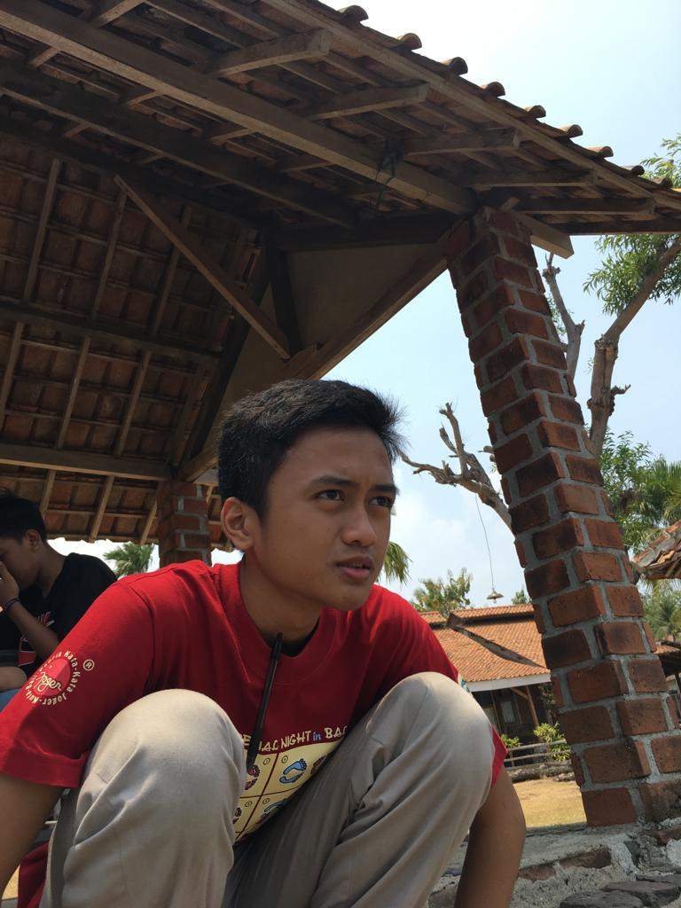

TENTANG

Naufal Dhawy Prakoso
KETUA
Seno Aji Prakoso
WAKIL KETUA
Kurnia Dewi Budi Cantika
Designer
Maharani Rizkyanda
Programmer
Sabina Shafa Salsabila
Content

Nisrina Afra Nabila
Content
KETUA
WAKIL KETUA
Designer
Programmer
Content
Content